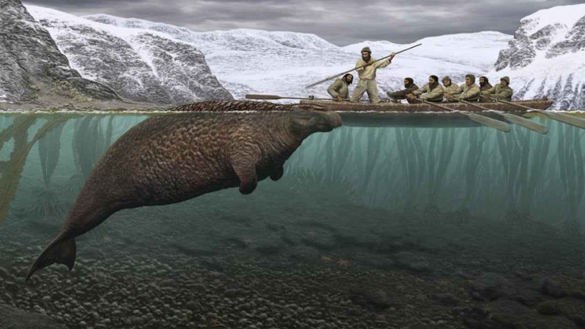
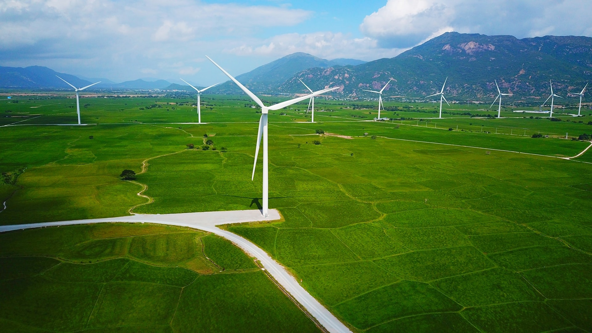
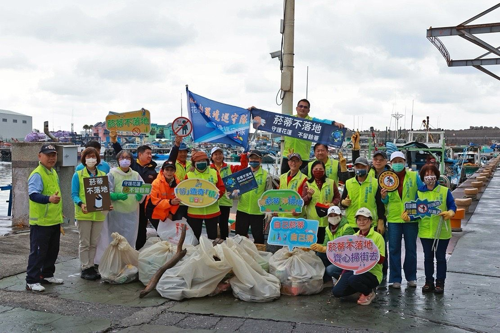
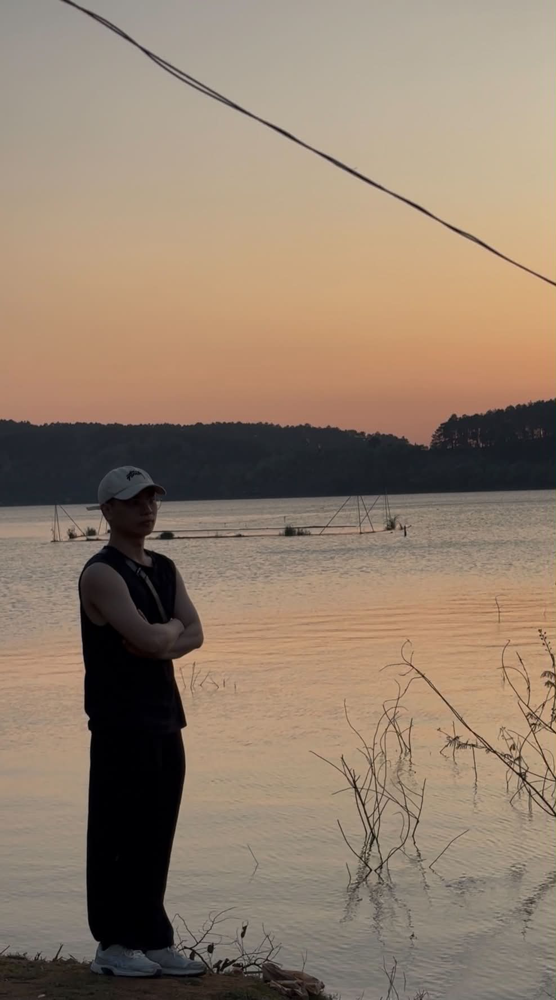

01. 現況與危機
現在地球越來越熱，氣候問題很嚴重。
Hiện nay Trái Đất ngày càng nóng lên, vấn đề khí hậu rất nghiêm trọng.
如果不馬上行動，未來會更危險。
Nếu không hành động ngay, tương lai sẽ còn nguy hiểm hơn。


03. 生物多樣性喪失
很多森林被砍伐，動物失去家園。
Nhiều khu rừng bị chặt phá, động vật mất nơi sống。
如果物種消失，自然平衡也會被破壞。
Nếu một loài biến mất, sự cân bằng tự nhiên cũng sẽ bị phá hủy。


05. 再生能源
太陽能和風力是乾淨的能源。
Năng lượng mặt trời và gió là nguồn năng lượng sạch。
使用再生能源可以減少污染。
Sử dụng năng lượng tái tạo có thể giảm ô nhiễm。


06. 減量・再利用・回收
我們應該少浪費，多再利用。
Chúng ta nên giảm lãng phí và tái sử dụng nhiều hơn。
回收資源可以減少垃圾。
Tái chế tài nguyên có thể giảm rác thải。


09. 從你我開始
改變地球，可以從小事開始。
Thay đổi Trái Đất có thể bắt đầu từ những việc nhỏ。
每個人做一點，世界就會更好。
Mỗi người làm một chút, thế giới sẽ tốt hơn。


綠色 - 清潔 - 美麗

黃重福

黃文茶
阮文平
感恩大家的聆聽